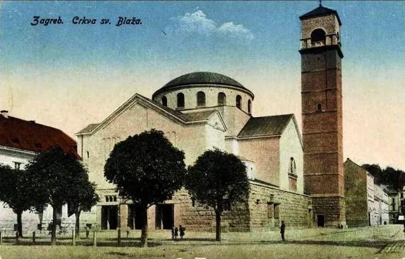
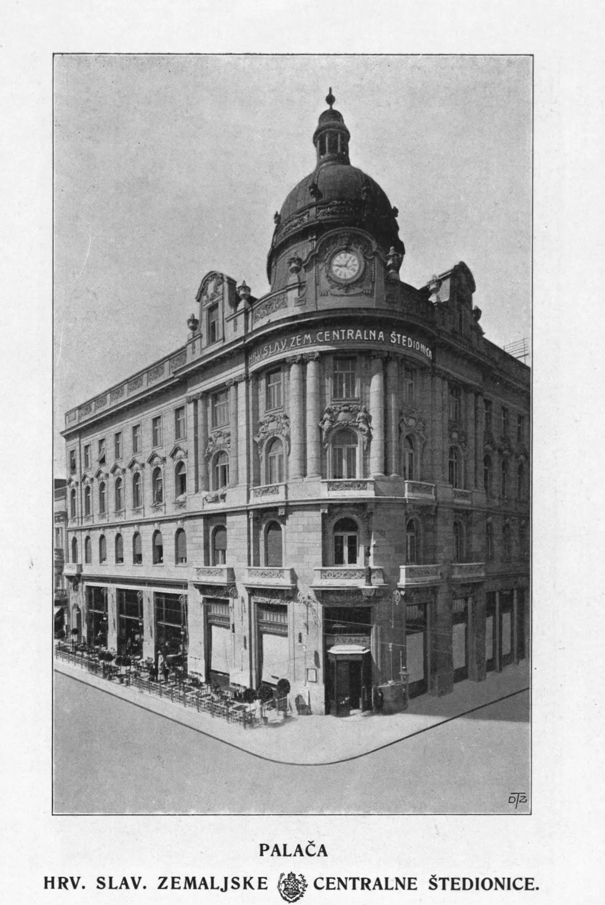
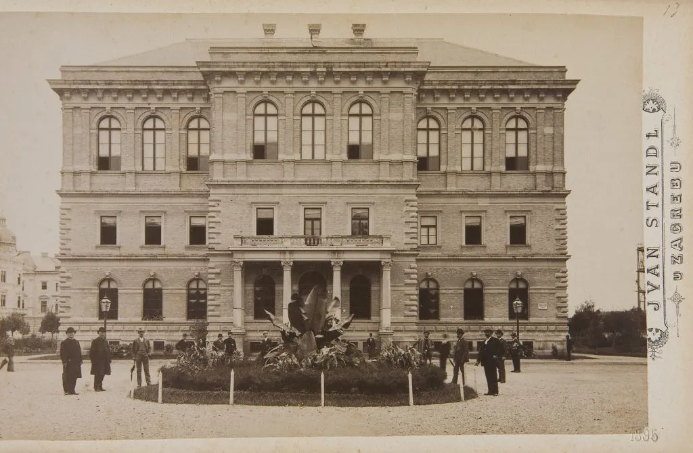
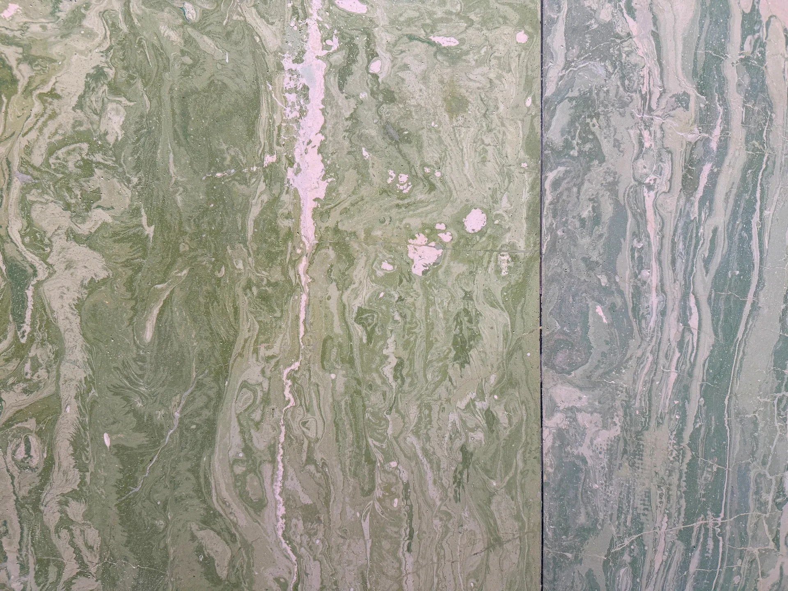
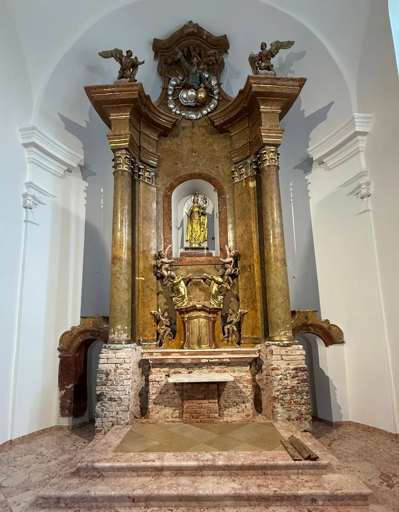
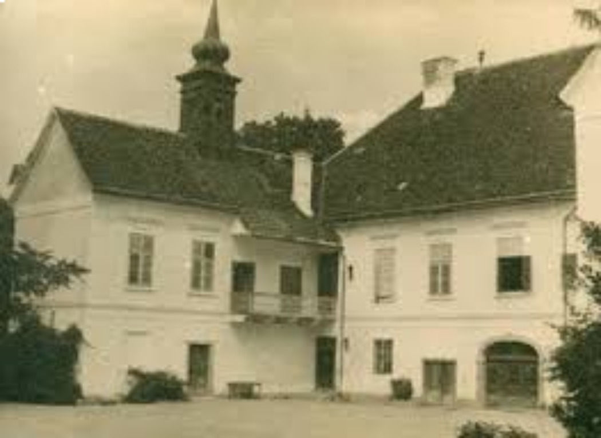

Kvaliteta iza koje stojimo vlastitim imenom.
ART3um d.o.o. i TAŠEL d.o.o. specijalizirane su restauratorske radionice za obnovu kamenih i štuko elemenata, kao i drugih vrijednih detalja arhitektonske baštine.
Naš tim čine visokoobrazovani i licencirani konzervatori-restauratori s bogatim praktičnim iskustvom u zaštiti kulturne baštine.
Naš rad temelji se na znanju, iskustvu i odgovornosti prema kulturnom nasljeđu, a svakom projektu pristupamo stručno, fleksibilno i pouzdano. Naglasak stavljamo na interdisciplinarni pristup, primjenu suvremenih metodologija i poštivanje načela očuvanja izvornosti materijala i povijesne autentičnosti objekta.
U svakom kutku Lijepe naše, dostupni smo da čuvamo priče stoljeća povijesti za buduće naraštaje.
Naša je misija pružiti vrhunsku restauratorsku uslugu u skladu s etičkim i konzervatorskim načelima - bilo da se radi o obnovi kamenog portala, štuko vijenca ili rekonstrukciji izgubljenog detalja prema staroj fotografiji.
Kroz jasnu komunikaciju, stručnu izvedbu i partnerstvo, doprinosimo očuvanju baštine zajedničkog kulturnog temelja.
Vjerujemo da restauracija ne znači samo popravak - već obnavljanje povjerenja u trajne vrijednosti.
Naša vizija je očuvanje povijesnih struktura na način koji spaja znanstveni pristup, zanatsku preciznost i poštovanje prema svakom sloju vremena.









Za sve informacije o restauraciji kulturnih dobara ili za suradnju:
Kontaktirajte nas na WhatsAppu za besplatnu procjenu laserskog čišćenja:
WhatsApp upit za procjenu